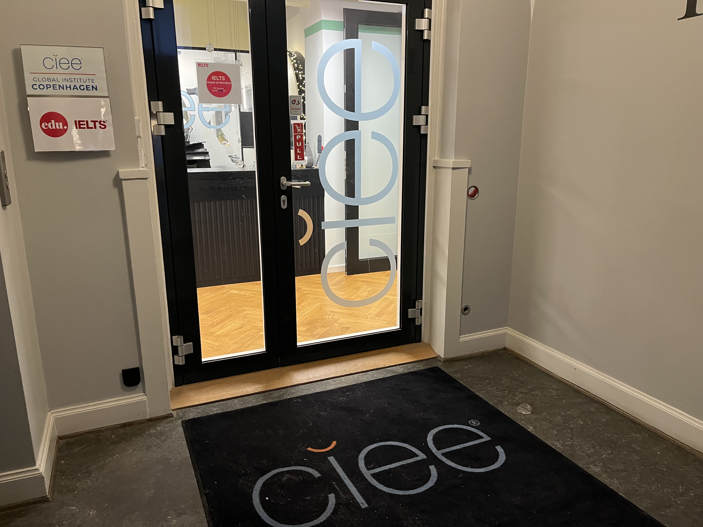

So much has happened since my last post here in February 2021. The blog was set up during the early stages of COVID lockdown when all of a sudden I had more time on my hands.
Soon after that last post my wife and I made the decision to move to Europe in early 2022, so started preparations for that - arrange for a shipping container, learn French, apply for a CELTA program.
The world started to repoen a bit in late summer 2021, but then my wife broke her ankle. So all of a sudden I was doing lots of home health care & keeping the house running on top of work. The wasn’t much brain space for independent data projects & keeping the blog running.
Then in late April 2022 we moved. The first stop was Lyon France

where I earned the CELTA via the ELT Hub.
I had expected teaching gigs to trickle in and I’d do independent data work while also spending time learning French and exploring Lyon and more of France. But the gigs came in abundance, and they were all new preps. So free time was at a minimum.
Then in December 2022 we moved again. A job at CIEE in Denmark

came up so we accelerated the ultimate end goal of moving here - back to where I was born and still have lots of family and friends. Now that we’re settled in our first non-sublet in almost a year and I’ve gotten settled at work, there’s finally some time to get my head back into data work. I was partly inspired by serving as a mentor in the DDSA mentoring program. I also started using r at work to automate a few mundane tasks and to do a little analysis on our students.
I’ll write about the migration process in a bit more detail in another post, but the tl/dr as to why is because in trying to do a simple update to my old main picture (me in a mask, early in lockdown) the build was failing in Netlify. So rather than try and diagnose the Hugo/Wowchemy issues (which turned out to be the Ubuntu deploy image…an easy reset), I saw that Posit’s new Quarto platform is very robust and a bit easier to publish with, so I decided to just rebuild the entire site.
To read about the migration details, go here. All of the old posts are up, time-stamped with the original posting dates. And hopefully soon, new posts as I work through a fairly long list of project ideas and try to get back to working on #tidytuesday datasets.
This post was last updated on 2023-05-19